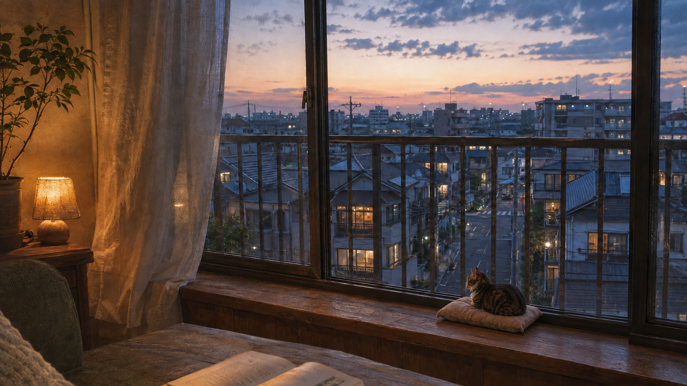
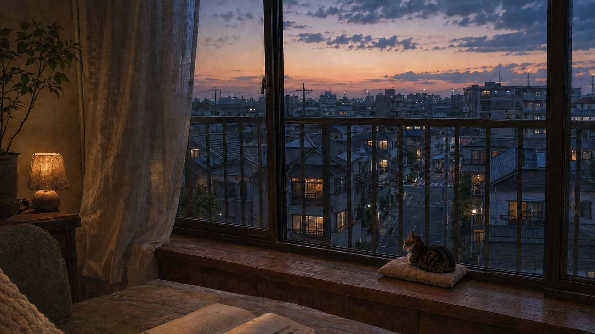

<!doctype html><html lang="zh-CN"><meta charset="utf-8"><meta name="viewport" content="width=device-width,initial-scale=1"><title>窓辺の夕方 · 静态美术基线</title><link rel="icon" href="data:,"><style>*{box-sizing:border-box}body{margin:0;background:#151b20;color:#d7d5cd;font-family:system-ui,sans-serif}header{max-width:1500px;margin:auto;padding:48px 28px 26px}small{color:#9da8ae;letter-spacing:.18em}h1{font-size:28px;font-weight:400;letter-spacing:.12em;margin-bottom:12px}p{color:#a7afb3;font-size:14px;line-height:1.8}main{max-width:1556px;margin:auto;padding:0 28px 48px}figure{margin:0 0 42px}img{display:block;width:100%;height:auto}figcaption{display:flex;gap:22px;align-items:center;font-size:13px;margin-top:14px}figcaption span{margin-right:auto}a{color:#cfc3a9;text-decoration:none}a:hover{text-decoration:underline}footer{padding:0 28px 40px;max-width:1556px;margin:auto;color:#8b969d;font-size:12px}</style><header><small>SCENE 02 · STATIC ART STUDY</small><h1>窓辺の夕方</h1><p>窗外微凉，室内微暖。拿铁安静地陪在窗边。<br>前三张比较同一构图；第四张是单独的局部关注图。</p></header><main><figure><a href="hero.html"></a><figcaption><span>01　默认 Hero</span><a href="hero.html">全屏看图 ↗</a><a href="../../../art-source/living-scene/scene02-v1/hero.png" download>原图</a></figcaption></figure><figure><a href="dim.html"></a><figcaption><span>02　稍暗灯光</span><a href="dim.html">全屏看图 ↗</a><a href="../../../art-source/living-scene/scene02-v1/dim.png" download>原图</a></figcaption></figure><figure><a href="clear.html"></a><figcaption><span>03　窗外更清晰</span><a href="clear.html">全屏看图 ↗</a><a href="../../../art-source/living-scene/scene02-v1/clear.png" download>原图</a></figcaption></figure><figure><a href="latte-detail.html"></a><figcaption><span>04　拿铁 · 局部关注</span><a href="latte-detail.html">全屏看图 ↗</a><a href="../../../art-source/living-scene/scene02-v1/latte-detail.png" download>原图</a></figcaption></figure></main><footer>静态美术审核页 · 原图实际像素见交付清单。全屏展示尺寸不代表原图分辨率。</footer></html>